one step
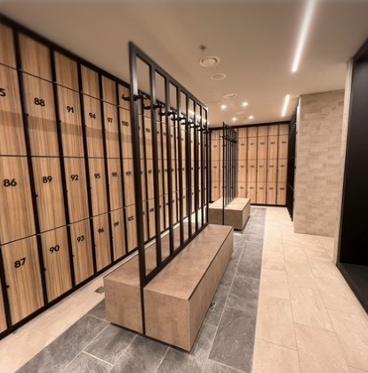
מהמועדוןצעד ראשון במסדרון הלוקרים. אור חם, עץ ושחור, מגבת על הכתף.
מצלמה נמוכה על הצעד · צעד אחד, תו פסנתר ראשון
Holmes Place · סרטון תדמית · סטוריבורד גרסה 4
רצף של רגעים קטנים מתוך החוויה במועדון. כל רגע מקבל קרטון של "one" ועוד מילה אחת מעולמות התוכן של הולמס פלייס, ואחריו השוט שלו. בסוף כל הרגעים מתחברים לסגיר: הלוגו ו-One life. Live it well.
החוק היחיד: כל קרטון הוא תמיד one ועוד מילה אחת, וכל מילה שייכת לעולם תוכן אחר במועדון. הקרטון עולה לשנייה בקאט חד, ואחריו השוט של אותו רגע. הסדר עובר מהמאמץ אל השקט: חדר כושר וסטודיו, אחר כך מים וחום, ובסוף טיפוח וחיוך.
התמונה הגדולה: הלוקיישן האמיתי מהמועדוןהתמונה הקטנה בפינה: הפעולה והדמות (AI, להמחשה)תגית אדומה: לוקיישן שנוצר ב-AI

מהמועדוןצעד ראשון במסדרון הלוקרים. אור חם, עץ ושחור, מגבת על הכתף.
מצלמה נמוכה על הצעד · צעד אחד, תו פסנתר ראשון
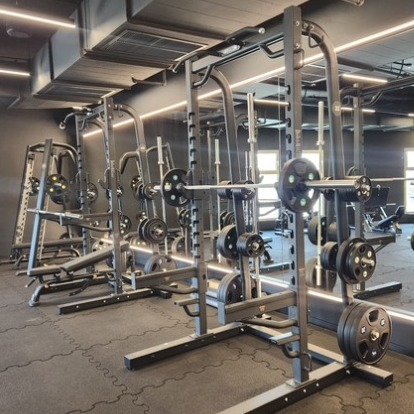
מהמועדוןדדליפט. המוט עולה מהרצפה, הלסת קפוצה, כל הגוף עובד.
פוש-אין איטי · מתכת, נשיפה
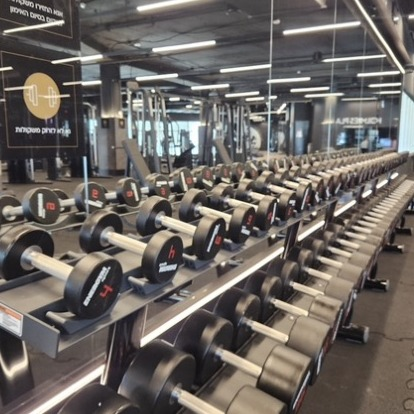
מהמועדוןהחזרה האחרונה. הידיים רועדות, והיא בכל זאת מסיימת.
קלוז-אפ, 85 מ"מ · נשיפה מבין השיניים
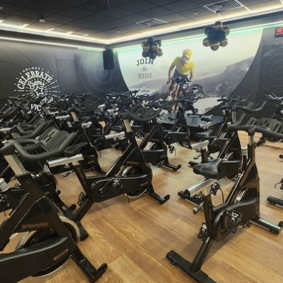
מהמועדוןשיעור ספינינג באור אדום. היא רוכבת בעמידה, חיוך של מאמץ.
שאטר איטי לטשטוש תנועה · הביט נכנס
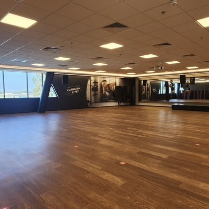
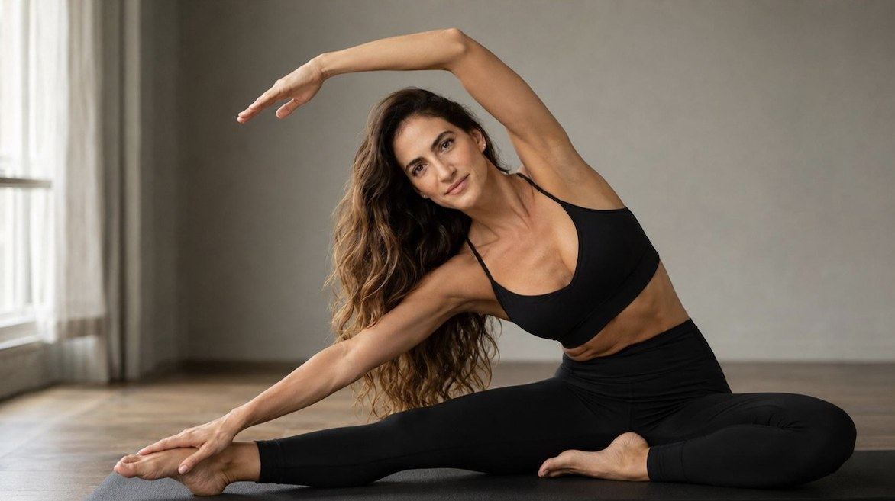
מהמועדוןאור בוקר מבעד לוילון לבן. מתיחה צידית איטית, עוד קצת יותר מאתמול.
דולי צד איטי · רצפת עץ, שקט
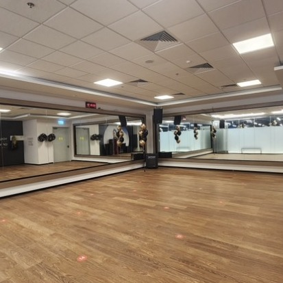
מהמועדוןעל מכשיר הרפורמר, עיניים עצומות, נשימה אחת ארוכה.
פרופיל קרוב, עומק שדה רדוד · רק הנשימה
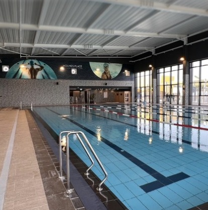
מהמועדוןאורך בריכה אחד בשחיית פרפר לכיוון המצלמה, טיפות קופאות באוויר. בסוף היד נוגעת בקיר.
בגובה המים, הילוך איטי · התזה, ואז שקט מתחת למים
אדים, אור ענבר, טיפת זיעה אחת מתגלגלת על הרקה.
מאקרו · מים על האבנים, שששש
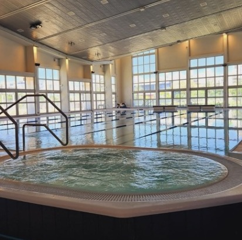
מהמועדוןראש לאחור על שפת הג'קוזי, עיניים עצומות. בפעם הראשונה היא לא עושה כלום.
כמעט סטטי · בעבוע, המוזיקה נסוגה
עיסוי באור נרות. ידיים על הגב, והפנים שלה משתחררות.
בגובה המיטה · המוזיקה מתחילה לבנות
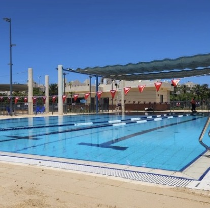
מהמועדוןשעת זהב ליד הבריכה החיצונית, מגבת לבנה. היא מסתובבת למצלמה וחיוך אמיתי עולה.
85 מ"מ, אור אחורי זהוב · שיא, ואז שקט
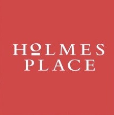
One life. Live it well.השוט האחרון מתכהה לאט. הריבוע האדום של הלוגו עולה במרכז, ומתחתיו הסלוגן.
סופר: One life. Live it well.
קריינות: “One life. Live it well.”
סאונד: תו פסנתר אחרון, ואז שקט.
אופציה: רגע לפני הלוגו, שוט קצר של הקיר בחדר הכושר שעליו כתוב One Life. Live it Well. הסלוגן כבר קיים במועדון, והוא מחבר את הסרט למקום.
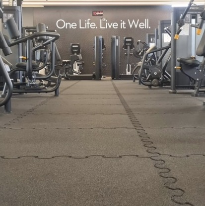
הקריינות אומרת רק את מה שכתוב על הקרטון, ברגע שהוא עולה. קול נשי, קרוב למיקרופון, כמעט לחישה. כל מילה נאמרת כמו נשימה, ובסגיר הקול נשמע קצת יותר מלא.
אישה בסוף שנות ה-30, שיער ארוך, גלי וכהה עם גוונים בצבע קרמל, עור זית ומבנה אתלטי. היא דומה לאישה ברפרנס שלך, אבל זו לא אותה אחת. אותה דמות לאורך כל הסרט, כדי שזה ירגיש כמו יום אחד של אדם אחד.
פסנתר מינימליסטי עם פולס שקט שמאיץ לאט עם המאמץ, נרגע במים ובחום, ונבנה שוב לקראת החיוך. הסאונד האמיתי מוביל: מתכת, נשימה, מים, אדים.
קרטון בצבע שמנת (#F7F4EF), טקסט שחור באותיות קטנות, כמו בחומרים שלך. בצילום: אור חם ומעשי, עומק שדה רדוד וגריין עדין. בבריכה ובספא נכנסים טורקיז ואור נרות.